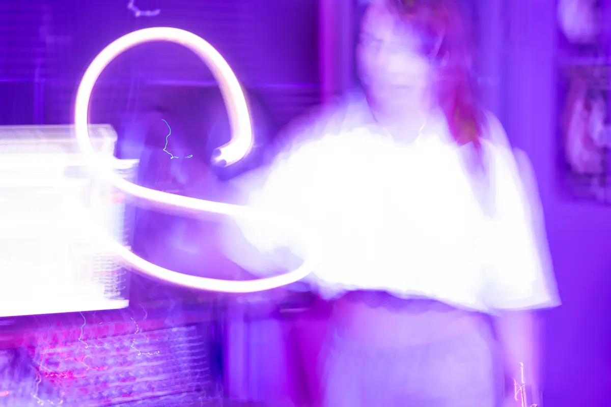
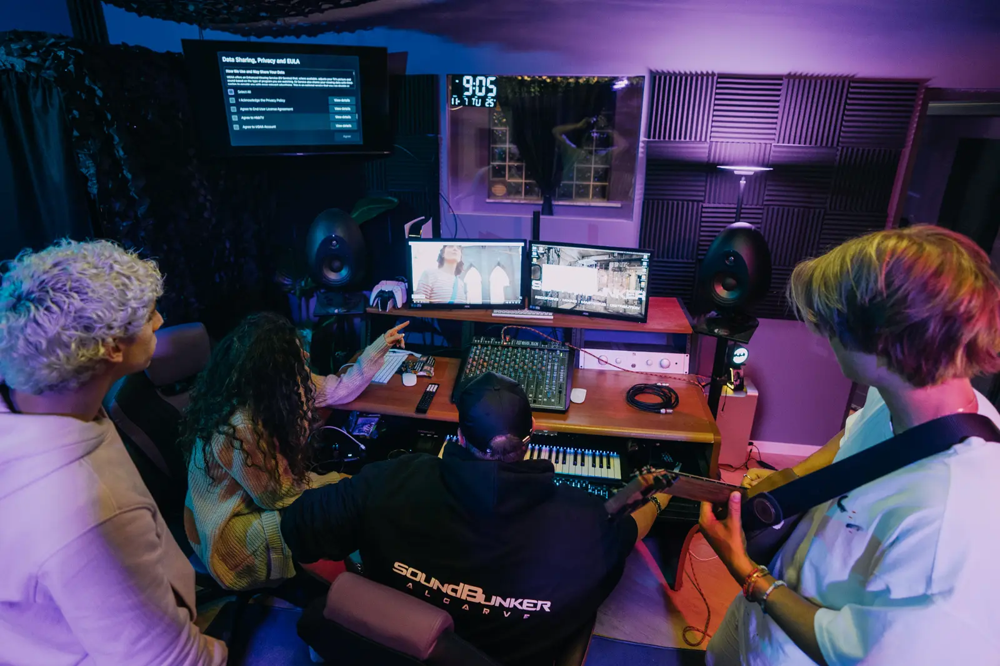
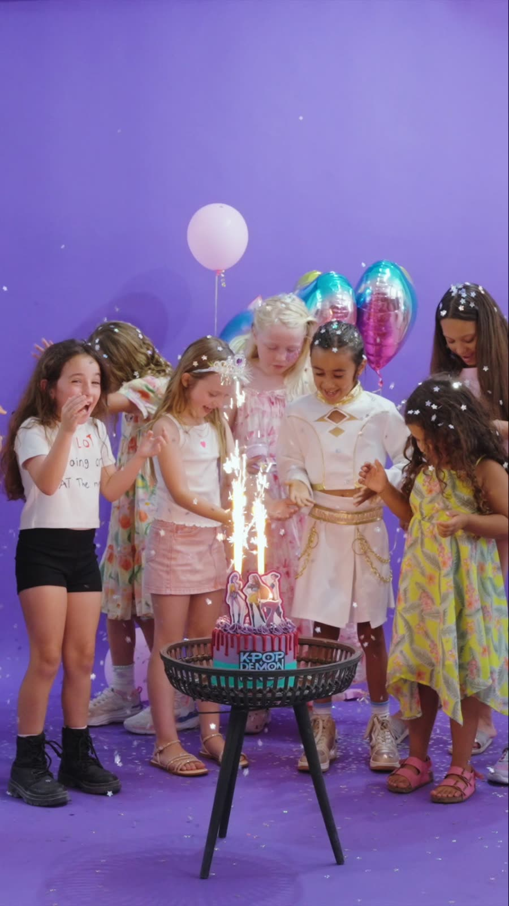

Skateboarding & street culture
Skate sessions, tuition and events sit alongside the wider visual language of street culture—boards, clothing, design and the independent attitude that connects the scene.
The Hub Culture · Loulé
The Hub Culture is an independent home for street culture, creativity and community in the centre of Loulé. Skateboarding, graffiti, streetwear, breakdancing, art and music sit under one roof—with SoundBunker bringing a working recording and photography studio into the mix.



Culture in motion
The Hub connects disciplines that naturally belong together. It is a place to learn a first skill, develop a serious craft, meet people, collaborate and become part of a creative community.
Skate sessions, tuition and events sit alongside the wider visual language of street culture—boards, clothing, design and the independent attitude that connects the scene.
Practical workshops and creative projects introduce lettering, composition, colour and personal style, giving young people and adults a place to create rather than just consume.
Movement and music are part of the same culture. Breakdance, DJ skills and SoundBunker's professional studio create a route from first workshop to finished performance or recording.
Design-led projects bring artwork off the wall and onto clothing and merchandise, helping young creatives understand identity, branding and how an idea can become something tangible.
Red Panda Entertainment
Red Panda Entertainment adds dedicated children's clubs, activities and entertainment to The Hub's family programme. Together, the wider space can move from creative tuition during the week to open days, parties and family events—giving children different ways to join in while parents know the environment is built around creativity, activity and community.

SoundBunker × The Hub Culture
The partnership means a young person can discover a skill through Hub Academy, learn from experienced tutors, earn achievement patches, perform or create at an event, and use professional studio facilities without needing to leave the community around them.